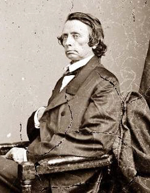
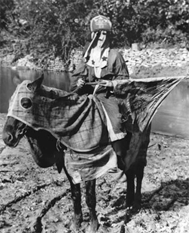

|
The restoration of Tennessee, starting with the appointment of Andrew Johnson as
Military Governor in March 1862, was a long and difficult process, complicated
by the fact that East Tennessee, the Unionist portion of the state, remained
under Confederate occupation during much of the war. Calling for a judicial
election in Nashville in May 1862, Johnson arrested the winner, a rank
secessionist, and appointed his opponent in his place. He ruled the state with
an iron hand, arrested Southern sympathizers, and sought to reanimate Unionist
feelings. Limited elections in West Tennessee early in 1863 were frustrated by
General Bedford Forrest's raids; the Emancipation Proclamation created further
|

William Gannaway Brownlow
|
difficulties by splitting the Unionists, and the restoration of civilian
government was delayed. Johnson himself finally endorsed emancipation, while his
conservative opponents resisted it. But when they sought to displace him with
William B. Campbell in elections in August 1863, they failed. Another effort to
hold county elections in March 1864 was also ineffectual, hampered by the fact
that Johnson's test oath was harsher than Lincoln's in his Proclamation of
Amnesty.
In 1864 Johnson became Abraham Lincoln's running mate, and a Unionist
convention in Nashville endorsed the ticket while prescribing a test oath so
vigorous as effectively to exclude even Unionist supporters of George B.
McClellan. Lincoln carried the state, and following the election, the time
seemed ripe for a constitutional convention. Icy conditions and the battle of
Nashville intervened, so that it was not until January 1865 that the convention
met. Dominated by the radical followers of "Parson" William Gannaway Brownlow and
encouraged by Johnson, the delegates called for a plebiscite to abolish slavery,
nominated Brownlow for Governor in a subsequent general election, and nullified
the actions of the Confederate state government.
The election on March 4 resulted in a radical sweep of offices. Brownlow
became Governor, and the radical regime that was inaugurated was kept in power
largely by a Franchise Law enacted by the legislature. Disqualifying former
Confederates for five years, the measure assured East Tennessee Unionist control
of the state, but Brownlow's ever-increasing radicalism alienated so many that
by 1866 a new Franchise Law, even more stringent than the first and permanently
disfranchising Southern sympathizers, was necessary to insure his continued
dominance. In July 1866 the Governor, who had broken with Johnson, brought about
the ratification of the Fourteenth Amendment by forcefully preventing
conservatives from averting a quorum in the legislature, and Tennessee was
readmitted to the Union. Its two Senators, both moderates, and its congressmen
were seated.
By the fall of 1866, Brownlow realized that if he wanted to sustain himself,
in spite of the unpopularity of the change, blacks would have to be given the
vote. Accordingly, upon his recommendation, in the beginning of 1867 the
legislature enfranchised the freedmen without giving them the right to hold
office. Because of its ratification of the Fourteenth Amendment, Tennessee was
|

One of the first Ku Klux Klansmen
|
not subject to Congressional Reconstruction; nevertheless, it gave birth to the
Ku Klux Klan, which terrorized potential voters.
In 1869 Brownlow was elected U.S. Senator, and DeWitt C. Senter, the
president of the state Senate, succeeded him. When Senter sought the
governorship in his own right, however, he was opposed by congressman William B.
Stokes. This split in the Union party led Senter to seek the support of the
conservatives, whose disfranchisement he effectively nullified by appointing new
registrars. He was successful, and the conservative legislature elected with him
repealed the Franchise Law.
Reconstruction was thus effectively at an end in Tennessee. In 1870 the
conservatives called a new constitutional convention, which enacted a poll tax
and provided for strict spending limits. The conservatives received a strong
boost by the debates on the Civil Rights Act of 1875, a measure that lost even
East Tennessee for the Republicans in 1874, but unlike most other Southern
states, a strong Republican faction survived there until the twentieth century.
Source: Hans Trefousse, Historical Dictionary of Reconstruction
(Westport, CT: Greenwood Press, 1991), 224-25.
|